Five local worlds. A small family of debris. Every zone recognizable, every run varied.
Proposal only · Background art unchanged · Source 4b15f97fbdfc
130exclusive planet slots
55exclusive debris slots
56existing assets rehomed or kept
129new production assets proposed
The key finding: flight currently uses a 55% zone-preference branch and a 45% global contrast-safe branch. A new roster needs zone-only selection to stay distinctive.
Read the assessment and recommended standard
This is an illustrated proposal for all 26 Star Chart zones, not an implemented asset pack. The recommendation is five distinct planets per zone, two or three debris types, no exact cross-zone planet reuse, and a zone-only visual selector. All existing background files, procedural recipes, washes, pan settings, geometry, progression, rewards and saves remain unchanged.
The desired result is diversity inside each destination and recognition between destinations. A zone should have related materials, not five recolors of one globe. Use five surface roles where appropriate: a signature world, a geological world, an atmospheric world, a contrasting-value world and a strange local landmark. The material mix can vary with the zone; forcing every zone to contain a gas giant or a ring would create a new kind of repetition.
The live source has 33 planet sprites and 27 debris sprites. Those planets occupy 119 preferred-pool memberships across 26 zones. Only P32 has a single preferred-zone assignment, and that assignment is the lava world in Bone Desert. P15 appears in seven preferred pools (26.9% of zones); P21 and P30 each appear in six (23.1%). These are membership counts, not measured screen-time percentages. The claim that a planet appears in 40% of zones was not tested as a play-session statistic.
More importantly, `sim.ts` chooses from the preferred pool on a 55% branch and from the global contrast-eligible library on a 45% branch, with up to ten rejection attempts and a local fallback. The global branch can select a local planet too; 45% is not the exact off-zone rate. Reassigning catalog pools alone cannot provide exclusivity. Selection uses independent `Math.random()` calls, so there is no anti-repeat bag. A gate intentionally paints the same planet above and below; preserve that pairing and diversify across gates.
Regular flight debris uses the zone pool, but the separate Spill/Debris Field selector draws globally, excluding four dark sprites. Zone-scoped Spill debris would require a separate implementation. Arcade also has its own rendering vocabulary; do not promise that 130 painted planets will appear there unchanged.
The most noticeable consecutive overlaps are in the green-sky run: Emerald Expanse and Alien Jungle share P21/P22/P30; Alien Jungle and Acid Swamp share P13/P30; Acid Swamp and Aurora Crown share P30. Gold-sky zones 12–14 need dry fossil, warm amber and scorched solar materials respectively. Green-sky zones 16–19 need ordered geology, dense life, chemistry and polar light respectively.
Selection and production rules
1. Treat each zone roster as exclusive in Star Chart. Resolve both the map and flight through the same stable asset identities. Match zones by name/id, not the position in ENVS: chart order and environment indices differ.
2. Use a shuffled five-item planet bag. Show each planet once before refilling, and prevent the last item of one bag from repeating as the first of the next. Keep a gate’s top and bottom planet identical. A 100- or 200-gate run then retains all five identities throughout the run.
3. Use a separate visual RNG so changing a skin does not consume the mission RNG or alter gate geometry, rewards or objectives. Seed it reproducibly for review and record its visual version independently from gameplay contracts.
4. Debris gets two or three material families, with variation in rotation and the existing safe size range. Do not add new debris types as a disguised difficulty increase. For a future Spill adaptation, filter within the zone and repair unreadable local art; never silently escape to a global family.
5. Preserve backgrounds exactly, including sky-gen.ts, zone paintings, washes, remaster opacity, pan and fallback/dark plates. Fix foreground contrast with solid cores, painted edge light, value separation and surface pattern. Global mean-color separation alone does not prove readability over a bright local patch.
6. Give new planets opaque circular contact-bearing cores. Small crystals, reefs and rings must not imply a different hit shape. Keep debris visibly compact and angular. No open vortex or see-through ghost planet should masquerade as a solid bounceable world.
7. Keep map labels, mission IDs, 780 objective slots, rewards, PAL assignments and the current gate/pace/opening/sway curves intact. Art progression is a proposal about discovery and visual rhythm, not a rebalance.
8. Preserve legacy numeric indices and published files during migration. Current art loading compacts successful sprites into arrays, so a missing file can shift later entries. A future named/stable slot map should preserve identity on failure and substitute only a reviewed local fallback.
9. Budget loading by current zone plus the next zone, with bounded caches. Do not eagerly decode 130 planets just because the current loader eagerly requests 33. Keep high-resolution masters separate from final measured 256px cutouts unless a separately reviewed resolution change is justified.
10. The generated boards are direction studies. They reinterpret existing entries and contain a few approximate materials; the numbered original thumbnails and proposal.json are authoritative for retained assets. Every new sprite still needs its own master, transparent export, fitting, game-size contrast review and collision/readability checks.
Progression and rollout
There are 260 authored levels in 26 groups of ten, used by both the current production and beta chart. Each group has five main Free Flight missions, a Lost in Space mission, a Deep Space mission, a Debris Field mission, an Arcade mission and a sixth Free Flight mission with fog. Level 1 is a special 8-gate, no-fail introduction. The numbers below come from the manifest; they are not measured completion durations.
Main Free Flight caps generally build through the first 100 levels, then remain at 100 gates for zones 11–20 and 200 gates for zones 21–26. Fog missions keep their separate shorter lengths. Zone 11 uses pace/opening/sway 1.00/1.10/1.00, zone 20 reaches 1.20/0.90/1.20, and zone 26 reaches 1.26/0.84/1.32. Acorn targets reset against the longer tier at level 201 and ramp again. No tuning changes are proposed here.
Within each zone, introduce all five local planets early and keep the bag diverse. Missions 1–2 establish the identity; 3–5 sustain it during tap, bounce and no-shield goals; 6–9 test whether it survives the alternate mode presentation; 10 should show familiar readable silhouettes through fog. Longer later runs increase the need for repeat control, not for larger, noisier pools.
Zone
Levels
Main FF gates
Fog gates
Pace
Opening
Sway
01 Deep Space
1–10
8 / 10
10
0.91 / 0.92 / 0.96 / 1.06
1.12 / 1.18
0.8 / 1
02 Nebula Nursery
11–20
20
10
0.91 / 0.96 / 1.06
1.18
0.93
03 Ice Moon
21–30
30
15
0.91 / 0.96 / 1.06
1.18
1.06
04 Solar Furnace
31–40
40
22 / 20
0.91 / 0.96 / 1.06
1.18
1.19
05 Sapphire Abyss
41–50
50
25
0.91 / 0.96 / 1.06
1.18
1.32
06 Crystal Belt
51–60
30 / 60
30
0.945 / 0.96 / 1.095
1.155
0.8
07 Crimson Storm
61–70
70
35
0.945 / 0.96 / 1.095
1.155
0.93
08 Violet Realm
71–80
24 / 80
80 / 40
0.945 / 1.095
1.155
1.06
09 Monochrome Void
81–90
35 / 90
45
0.945 / 0.96 / 1.095
1.155
1.19
10 Hypervivid
91–100
45 / 100
50
0.945 / 0.96 / 1.095
1.155
1.32
11 Rust Belt
101–110
100
55
1
1.1
1
12 Bone Desert
111–120
100
60
1.022
1.078
1.022
13 Golden Hour
121–130
100
65
1.044
1.056
1.044
14 Solar Corona
131–140
100
70
1.067
1.033
1.067
15 Coral Shallows
141–150
100
75
1.089
1.011
1.089
16 Emerald Expanse
151–160
100
80
1.111
0.989
1.111
17 Alien Jungle
161–170
100
85
1.133
0.967
1.133
18 Acid Swamp
171–180
100
90
1.156
0.944
1.156
19 Aurora Crown
181–190
100
95
1.178
0.922
1.178
20 Pulsar Field
191–200
100
100
1.2
0.9
1.2
21 Time Fracture
201–210
200
105
1.21
0.89
1.22
22 Neon Bazaar
211–220
200
110
1.22
0.88
1.24
23 Prism Storm
221–230
200
115
1.23
0.87
1.26
24 Ghost Nebula
231–240
200
120
1.24
0.86
1.28
25 Blackout Zone
241–250
200
125
1.25
0.85
1.3
26 Event Horizon
251–260
200
130
1.26
0.84
1.32
Review the pilot group first: Ice Moon, Rust Belt, Bone Desert and Alien Jungle. Together they test a bright sky, a detailed industrial panorama, a shared gold sky and a shared green sky. They also test whether the existing ice/rust/fossil/forest assets feel better in their natural homes.
Then approve the five-world language before producing the full library. Phase 1 is a separately approved implementation of stable zone identity and anti-repeat selection in the pilot group. Phase 2 expands complete zone packs in chart order, with adjacent zones reviewed side by side. Phase 3 covers the separate Spill palette path and Arcade readability where applicable. Do not lock a zone to an incomplete one- or two-planet roster while waiting for the rest of its art.
The full plan needs 101 new planets and 28 new debris sprites: 129 new production assets. Rehoming 29 planets and 27 debris sprites reduces the amount of new art, but it is still a substantial art-production project. The seven concept boards below are not 129 individually finished sprites. A smaller first release should complete fewer zones at the full five-planet standard; retaining broad global reuse would not meet the requested experience.
blue oceans / ochre gas / ivory regolithRefine the foreground
Current background · unchanged
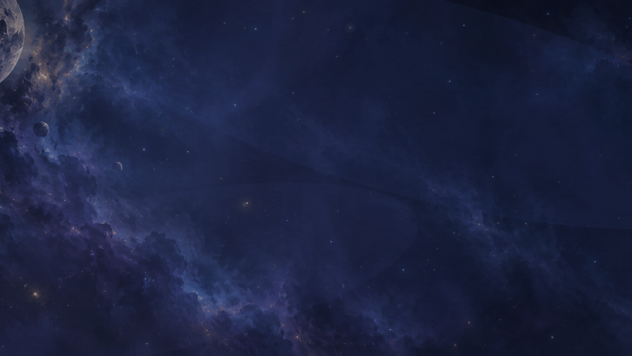
Source-rendered reference, not a live flight screenshot. indigo recipe, with zone-scenes/deep-space.png remaster.
What works and what to change
The Earth, ringed giant and moon give the opening a strong familiar foundation. The forest ball and turquoise ringed planet dilute that first-home identity.
Progression role. Start with recognizable worlds; reveal the canyon and banded giant during the first two missions. Clear silhouettes teach the bounceable-planet vocabulary.
Generated direction study. On phones, swipe the family row to see all five planets and debris. Existing entries are reinterpretations here; the original numbered thumbnails below are authoritative. Open the full concept board.
The five planets
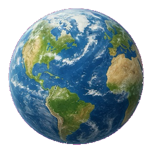
EXISTING P00Homeworld
Use the existing artwork unchanged.
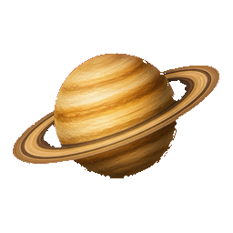
EXISTING P01Ochre Rings
Use the existing artwork unchanged.
EXISTING P02Silver Moon
Use the existing artwork unchanged.
+
NEW CONCEPTBanded Giant
ochre and cream gas bands with one broad oval storm
+
NEW CONCEPTRed Frontier
matte dusty red plains and a single long canyon
Local debris
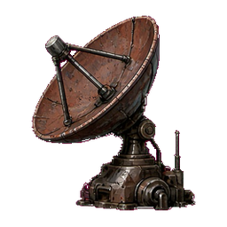
EXISTING D01Lost Antenna
Use the existing artwork unchanged.
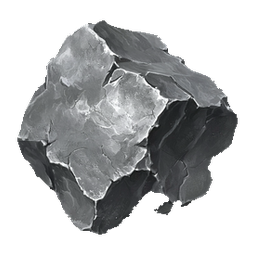
EXISTING D21Nickel Fragment
Use the existing artwork unchanged.
Assignment changes
Remove from this zone’s preferred list: P05, P09, P04 planets; D24 debris. Preserve the source files.
Existing retained here: P00, P01, P02. Existing planets rehomed into this zone: none.
Current preferred pools and original artwork
Planets · 6 in the preferred pool
P00P02P01
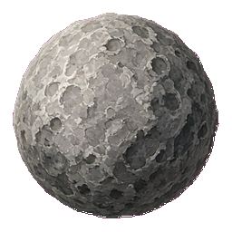
P05P09
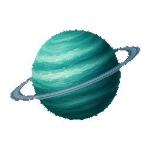
P04
Debris · 3 in the local pool
D01D21
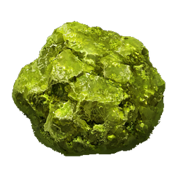
D24
The global planet branch can add other sprites during flight. These lists describe membership, not all possible observed spawns.
ZONE 02 / LEVELS 11–20
Nebula Nursery
Worlds still forming
teal / dusty rose / pale lilacRebuild the foreground
Current background · unchanged
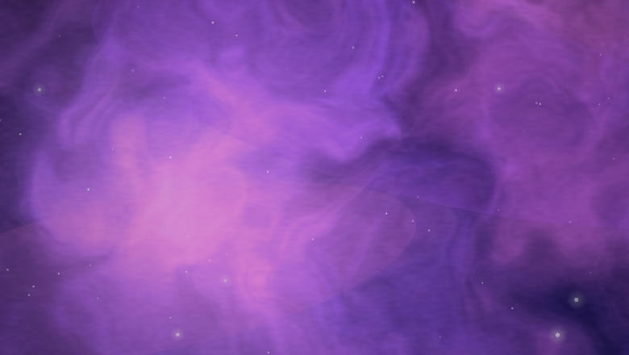
Source-rendered reference, not a live flight screenshot. magenta recipe.
What works and what to change
The magenta sky has a nursery mood, but the current aurora, city-light and crystal planets read as destinations from unrelated zones.
Progression role. Follow the familiar opening with soft, unfinished surfaces. Keep the five worlds visibly different through bands, craters, shell seams and haze.
Main Free Flight: 20 gates · Fog: 10 Pace 0.91 / 0.96 / 1.06 · Opening 1.18 · Sway 0.93
Proposed family · five planets, 2 debris types
Generated direction study. On phones, swipe the family row to see all five planets and debris. Existing entries are reinterpretations here; the original numbered thumbnails below are authoritative. Open the full concept board.
The five planets
EXISTING P04Teal Cradle
Use the existing artwork unchanged.
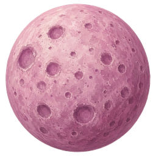
EXISTING P08Rose Moon
Use the existing artwork unchanged.
+
NEW CONCEPTCloudseed
plum and cream softly folded cloud layers
+
NEW CONCEPTPearl Cocoon
pale compact sphere with a dark curved shell seam
+
NEW CONCEPTAccretion Pearl
lavender solid globe with a short dusty equatorial belt
Local debris
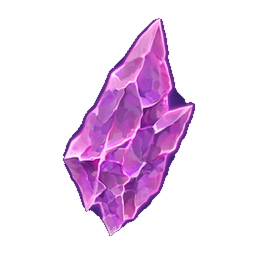
EXISTING D09Rose Seed Crystal
Use the existing artwork unchanged.
+
NEW CONCEPTCloudglass Nodule
rounded plum stone enclosing cloudy pale inclusions
Assignment changes
Remove from this zone’s preferred list: P20, P28, P25, P15 planets; D11, D02, D20 debris. Preserve the source files.
Existing retained here: P04. Existing planets rehomed into this zone: P08.
Current preferred pools and original artwork
Planets · 5 in the preferred pool
P04
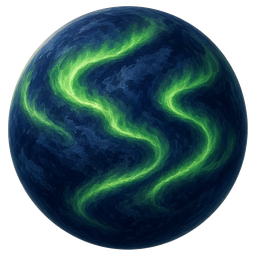
P20
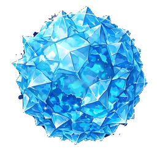
P28
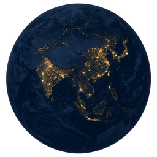
P25
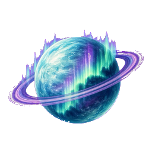
P15
Debris · 3 in the local pool
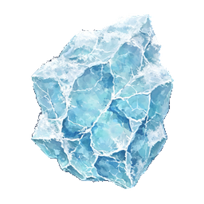
D11
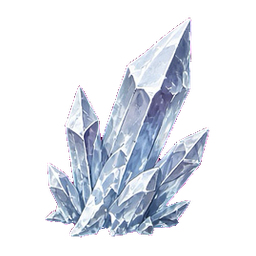
D02
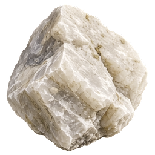
D20
The global planet branch can add other sprites during flight. These lists describe membership, not all possible observed spawns.
ZONE 03 / LEVELS 21–30
Ice Moon
A frozen expedition
cobalt / frost white / slateRebuild the foreground
Current background · unchanged
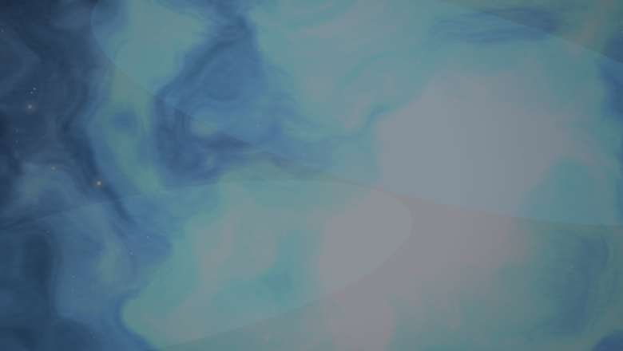
Source-rendered reference, not a live flight screenshot. ice recipe.
What works and what to change
The preferred pool is dominated by pink, purple, coral and rainbow-crystal imagery. P31 is the existing ice-crust world but is absent here.
Progression role. Make the first cold zone unmistakable. Dark cores and white ledges should remain readable against the bright ice sky without borrowing pink planets.
Main Free Flight: 30 gates · Fog: 15 Pace 0.91 / 0.96 / 1.06 · Opening 1.18 · Sway 1.06
Proposed family · five planets, 2 debris types
Generated direction study. On phones, swipe the family row to see all five planets and debris. Existing entries are reinterpretations here; the original numbered thumbnails below are authoritative. Open the full concept board.
The five planets
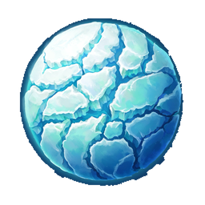
EXISTING P31Ice Crust
Use the existing artwork unchanged.
+
NEW CONCEPTGlacier Shelf
blue-black ocean split by thick white glacier shelves
+
NEW CONCEPTFrosted Basalt
charcoal cratered moon dusted with rim frost
+
NEW CONCEPTBrine World
deep cobalt sphere with pale circular frozen lakes
+
NEW CONCEPTHail Giant
slate gas world with broad white frozen storm bands
Local debris
EXISTING D11Blue Ice Chunk
Use the existing artwork unchanged.
+
NEW CONCEPTDark Froststone
dark angular rock with thick white frost on one face
Assignment changes
Remove from this zone’s preferred list: P10, P08, P22, P26, P23, P30 planets; D18, D19, D23 debris. Preserve the source files.
Existing retained here: none. Existing planets rehomed into this zone: P31.
Current preferred pools and original artwork
Planets · 6 in the preferred pool
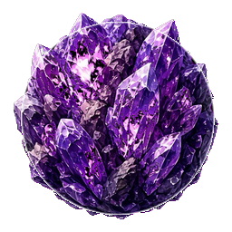
P10P08
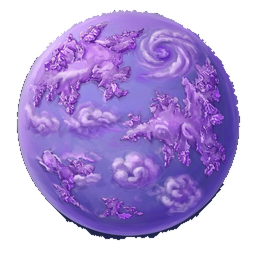
P22
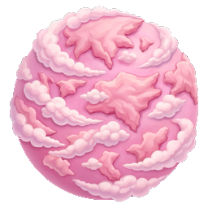
P26
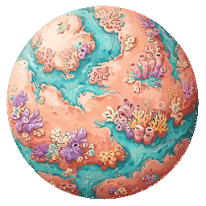
P23
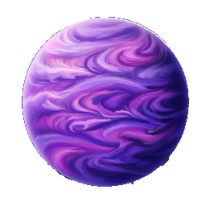
P30
Debris · 3 in the local pool
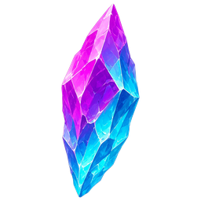
D18
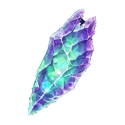
D19
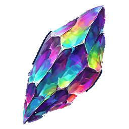
D23
The global planet branch can add other sprites during flight. These lists describe membership, not all possible observed spawns.
ZONE 04 / LEVELS 31–40
Solar Furnace
Solid worlds forged by heat
charcoal / copper / ember orangeRebuild the foreground
Current background · unchanged
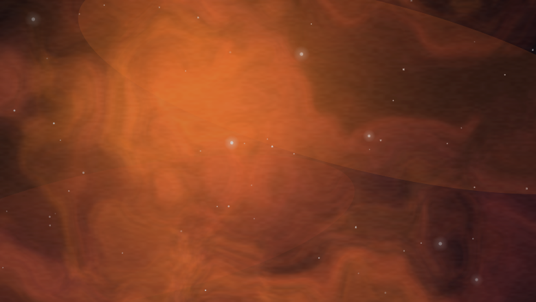
Source-rendered reference, not a live flight screenshot. inferno recipe.
What works and what to change
The furnace currently favors an electric-blue globe, a chalk shell, ice crust and a grey moon. Heat-themed debris helps, but the planets fight the premise.
Progression role. Use heat trapped in heavy material. Reserve atmospheric red cyclones for Crimson Storm and pale solar surfaces for Solar Corona.
Generated direction study. On phones, swipe the family row to see all five planets and debris. Existing entries are reinterpretations here; the original numbered thumbnails below are authoritative. Open the full concept board.
Refine before production. Separate Vent World from Magma Heart with three broad vent basins rather than another lava-crack network.
The five planets
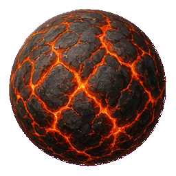
EXISTING P03Magma Heart
Use the existing artwork unchanged.
+
NEW CONCEPTIron Cinder
oxidized iron globe with sparse hot pits
+
NEW CONCEPTAshfall Moon
matte charcoal cratered sphere with ash-white rims
+
NEW CONCEPTQuenched Slag
blue-black glassy globe with dull copper scabs
+
NEW CONCEPTVent World
dark basalt planet with three broad glowing vent basins
Local debris
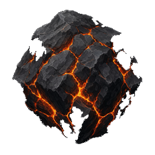
EXISTING D12Magma Boulder
Use the existing artwork unchanged.
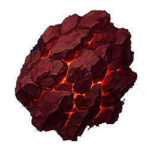
EXISTING D14Ember Plate
Use the existing artwork unchanged.
Assignment changes
Remove from this zone’s preferred list: P29, P24, P31, P05 planets; D07, D20, D08 debris. Preserve the source files.
Existing retained here: none. Existing planets rehomed into this zone: P03.
Current preferred pools and original artwork
Planets · 4 in the preferred pool
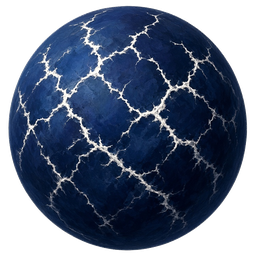
P29P24P31P05
Debris · 4 in the local pool
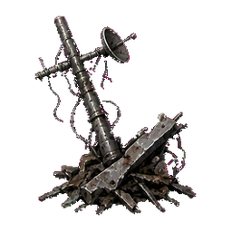
D07D20D14
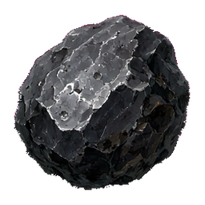
D08
The global planet branch can add other sprites during flight. These lists describe membership, not all possible observed spawns.
ZONE 05 / LEVELS 41–50
Sapphire Abyss
Deep ocean without a shoreline
midnight blue / indigo / silver foamRebuild the foreground
Current background · unchanged
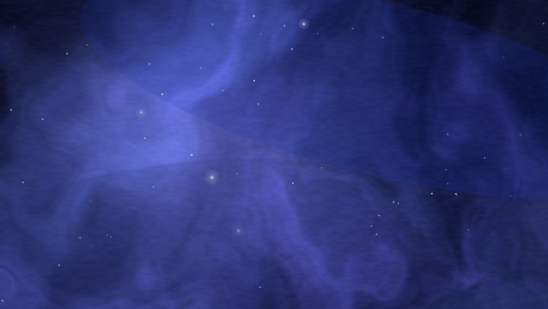
Source-rendered reference, not a live flight screenshot. indigo recipe.
What works and what to change
Brain-like pink lobes, a candy swirl, coral and a rose moon provide contrast but scarcely describe an abyss.
Progression role. A quiet deep-water chapter between fire and crystal. Distinguish it from Coral Shallows through pressure, darkness and minimal exposed reef.
Main Free Flight: 50 gates · Fog: 25 Pace 0.91 / 0.96 / 1.06 · Opening 1.18 · Sway 1.32
Proposed family · five planets, 2 debris types
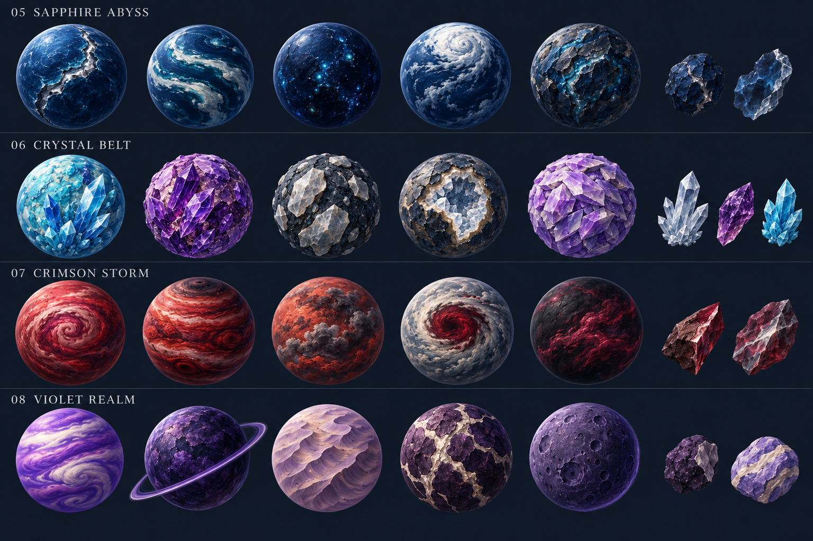
Generated direction study. On phones, swipe the family row to see all five planets and debris. Existing entries are reinterpretations here; the original numbered thumbnails below are authoritative. Open the full concept board.
The five planets
+
NEW CONCEPTTrench World
indigo ocean cut by one silver-lit abyssal fault
+
NEW CONCEPTTidal Bands
navy planet crossed by broad curved pale tidal bands
+
NEW CONCEPTInk Sea
near-black blue globe with sparse bioluminescent pinpricks
+
NEW CONCEPTWhitecap Giant
dark sapphire gas-sea globe with a dense white storm cap
+
NEW CONCEPTPressure Reef
dark mineral seabed sphere with compact blue ridges and pale edge light
Local debris
+
NEW CONCEPTAbyss Stone
rounded dense navy stone with a silver fracture
+
NEW CONCEPTPressure Glass
thick smoky blue fragment with a pale beveled edge
Assignment changes
Remove from this zone’s preferred list: P26, P13, P23, P08 planets; D09, D18 debris. Preserve the source files.
Existing retained here: none. Existing planets rehomed into this zone: none.
Current preferred pools and original artwork
Planets · 4 in the preferred pool
P26
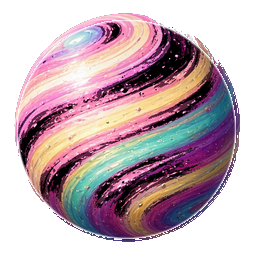
P13P23P08
Debris · 2 in the local pool
D09D18
The global planet branch can add other sprites during flight. These lists describe membership, not all possible observed spawns.
ZONE 06 / LEVELS 51–60
Crystal Belt
An exposed mineral belt
cyan / quartz white / amethystRebuild the foreground
Current background · unchanged
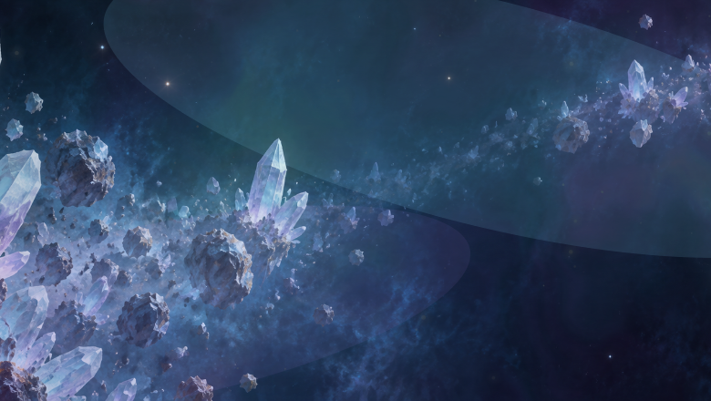
Source-rendered reference, not a live flight screenshot. neon recipe, with zone-scenes/crystal-belt.png remaster.
What works and what to change
The strong crystal panorama already does much of the work. Its preferred planets are chalk, moon, eye, sand and rust; the two actual crystal worlds live elsewhere.
Progression role. Create recognition through thick solid facets. Prism Storm later uses thin glass skins and optical coatings, so the two chapters do not become duplicate crystal sets.
Generated direction study. On phones, swipe the family row to see all five planets and debris. Existing entries are reinterpretations here; the original numbered thumbnails below are authoritative. Open the full concept board.
The five planets
EXISTING P28Cyan Crystal Core
Use the existing artwork unchanged.
EXISTING P10Amethyst Core
Use the existing artwork unchanged.
+
NEW CONCEPTQuartz Mantle
rounded dark globe studded with broad milky quartz plates
+
NEW CONCEPTSmoky Geode
round smoky mineral shell with one pale open geode face
+
NEW CONCEPTTabular World
spherical mineral mass built from short flat lavender crystal plates
Local debris
EXISTING D02Quartz Cluster
Use the existing artwork unchanged.
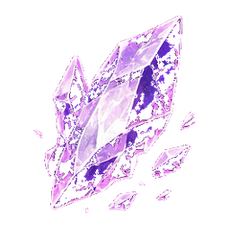
EXISTING D06Amethyst Shard
Use the existing artwork unchanged.
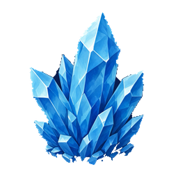
EXISTING D13Cyan Cluster
Use the existing artwork unchanged.
Assignment changes
Remove from this zone’s preferred list: P24, P02, P12, P06, P16, P18 planets; D21, D00, D03 debris. Preserve the source files.
Existing retained here: none. Existing planets rehomed into this zone: P10, P28.
Current preferred pools and original artwork
Planets · 6 in the preferred pool
P24P02
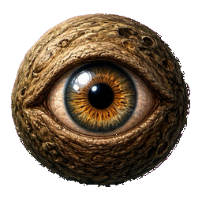
P12
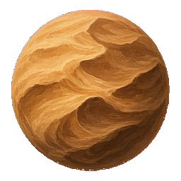
P06
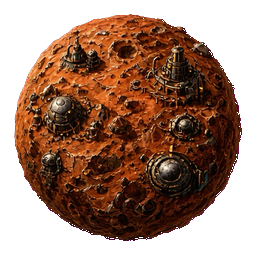
P16
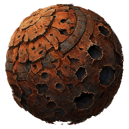
P18
Debris · 3 in the local pool
D21
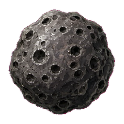
D00
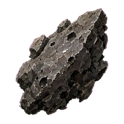
D03
The global planet branch can add other sprites during flight. These lists describe membership, not all possible observed spawns.
ZONE 07 / LEVELS 61–70
Crimson Storm
Atmospheric violence
burgundy / scarlet / storm greyRebuild the foreground
Current background · unchanged
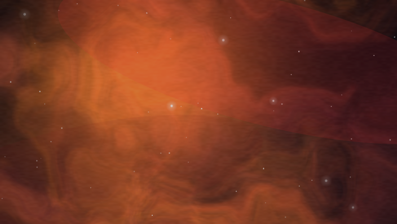
Source-rendered reference, not a live flight screenshot. inferno recipe.
What works and what to change
The inferno backdrop suggests a red storm, yet the preferred pool includes aurora, lightning cities, a vortex and purple crystal. Gold nugget is the sole debris type.
Progression role. Let swirling surfaces convey the storm without added flashes or higher obstacle density. Keep red atmospheric motion distinct from Furnace lava seams.
Main Free Flight: 70 gates · Fog: 35 Pace 0.945 / 0.96 / 1.095 · Opening 1.155 · Sway 0.93
Proposed family · five planets, 2 debris types
Generated direction study. On phones, swipe the family row to see all five planets and debris. Existing entries are reinterpretations here; the original numbered thumbnails below are authoritative. Open the full concept board.
The five planets
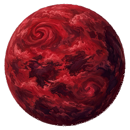
EXISTING P21Red Cyclone
Use the existing artwork unchanged.
+
NEW CONCEPTScarlet Bands
scarlet gas world with broad storm bands and a dark pole
+
NEW CONCEPTIroncloud
rust-red cloud planet with slate thunderheads
+
NEW CONCEPTPale Supercell
pale grey atmosphere with one large dark-red storm eye
+
NEW CONCEPTEmber Squall
near-black globe with sweeping burgundy cloud streaks
Local debris
+
NEW CONCEPTHematite Shard
dark red metallic shard with a bright cut face
+
NEW CONCEPTStormglass
smoky red angular glass enclosing pale streaks
Assignment changes
Remove from this zone’s preferred list: P15, P11, P17, P27, P10, P24 planets; D15 debris. Preserve the source files.
Existing retained here: none. Existing planets rehomed into this zone: P21.
Current preferred pools and original artwork
Planets · 6 in the preferred pool
P15P11P17P27P10P24
Debris · 1 in the local pool
D15
The global planet branch can add other sprites during flight. These lists describe membership, not all possible observed spawns.
ZONE 08 / LEVELS 71–80
Violet Realm
Quiet violet celestial worlds
violet / plum / lavender / ivoryRebuild the foreground
Current background · unchanged
Source-rendered reference, not a live flight screenshot. vortex recipe.
What works and what to change
The vortex sky is clear, but green forest, ochre rings, lava and blue vortex planets make the foreground a general sampler.
Progression role. A calm, regal pause after Crimson Storm. Keep forms spherical and solid; the background vortex should not be duplicated as a bounceable hole.
Generated direction study. On phones, swipe the family row to see all five planets and debris. Existing entries are reinterpretations here; the original numbered thumbnails below are authoritative. Open the full concept board.
The five planets
EXISTING P30Violet Cloud Sea
Use the existing artwork unchanged.
EXISTING P27Dusk Rings
Use the existing artwork unchanged.
+
NEW CONCEPTLavender Dunes
muted lavender sand globe with large wind-carved ridges
+
NEW CONCEPTPlum Marble
deep plum solid world with thick ivory mineral veins
+
NEW CONCEPTAmethyst Moon
smooth dark violet cratered globe with a restrained lavender rim
Local debris
+
NEW CONCEPTViolet Basalt
compact dark plum rock with a pale broken face
+
NEW CONCEPTVeined Pebble
rounded lavender stone with broad ivory veins
Assignment changes
Remove from this zone’s preferred list: P20, P09, P01, P14, P07 planets; D08, D25 debris. Preserve the source files.
Existing retained here: none. Existing planets rehomed into this zone: P27, P30.
Current preferred pools and original artwork
Planets · 5 in the preferred pool
P20P09P01P14P07
Debris · 2 in the local pool
D08D25
The global planet branch can add other sprites during flight. These lists describe membership, not all possible observed spawns.
ZONE 09 / LEVELS 81–90
Monochrome Void
Color disappears; texture remains
ivory / neutral grey / graphiteRebuild the foreground
Current background · unchanged
Source-rendered reference, not a live flight screenshot. mono recipe.
What works and what to change
The grey sky is paired with rainbow continents, candy bands, aurora rings and purple crystal. That creates contrast but undermines the monochrome promise.
Progression role. Make the loss of color a memorable transition into level 81. Shape and value provide variety before Hypervivid restores saturation.
Generated direction study. On phones, swipe the family row to see all five planets and debris. Existing entries are reinterpretations here; the original numbered thumbnails below are authoritative. Open the full concept board.
Refine before production. Keep hard neutral geology distinct from the eroded smoky surfaces proposed for Ghost Nebula.
The five planets
EXISTING P05Old Grey Moon
Use the existing artwork unchanged.
+
NEW CONCEPTAlabaster Fault
off-white sphere with bold graphite fissures
+
NEW CONCEPTGraphite Bands
dark grey gas world with broad silver bands
+
NEW CONCEPTIron Pearl
brushed silver globe with hammered dark impact patches
+
NEW CONCEPTTwo-Tone Moon
neutral grey planet divided by one sweeping pale geological basin
Local debris
EXISTING D00Crater Rock
Use the existing artwork unchanged.
EXISTING D03Regolith Slab
Use the existing artwork unchanged.
Assignment changes
Remove from this zone’s preferred list: P19, P13, P15, P10 planets; D18, D23, D19, D09, D06 debris. Preserve the source files.
Existing retained here: none. Existing planets rehomed into this zone: P05.
Current preferred pools and original artwork
Planets · 4 in the preferred pool
P19P13P15P10
Debris · 5 in the local pool
D18D23D19D09D06
The global planet branch can add other sprites during flight. These lists describe membership, not all possible observed spawns.
ZONE 10 / LEVELS 91–100
Hypervivid
Liquid color and pigment
magenta / cyan / yellow / midnightRebuild the foreground
Current background · unchanged
Source-rendered reference, not a live flight screenshot. neon recipe, with zone-scenes/hypervivid.png remaster.
What works and what to change
The distinctive ribbon panorama currently has only two grey moons in its preferred pool. It is visually memorable behind a particularly repetitive foreground.
Progression role. The first 100-level finale should feel like color returning. Five different surface patterns sustain the late-zone run without more visual noise.
Generated direction study. On phones, swipe the family row to see all five planets and debris. Existing entries are reinterpretations here; the original numbered thumbnails below are authoritative. Open the full concept board.
The five planets
EXISTING P13Ribbon World
Use the existing artwork unchanged.
EXISTING P19Pigment Continents
Use the existing artwork unchanged.
+
NEW CONCEPTCyan Oil-Sheen
teal sphere with smooth broad pink iridescent pools
+
NEW CONCEPTMagenta Whorl
magenta and midnight gas globe with large curved turquoise streaks
+
NEW CONCEPTOpal Ink
cream pearl planet marbled with separated cyan and violet ink blooms
Local debris
EXISTING D18Colorglass
Use the existing artwork unchanged.
+
NEW CONCEPTLacquer Chip
curved glossy cyan fragment with a magenta underside
Assignment changes
Remove from this zone’s preferred list: P02, P05 planets; D10, D03, D00 debris. Preserve the source files.
Existing retained here: none. Existing planets rehomed into this zone: P13, P19.
Current preferred pools and original artwork
Planets · 2 in the preferred pool
P02P05
Debris · 3 in the local pool
D10D03D00
The global planet branch can add other sprites during flight. These lists describe membership, not all possible observed spawns.
ZONE 11 / LEVELS 101–110
Rust Belt
An abandoned orbital foundry
rust / gunmetal / verdigrisRebuild the foreground
Current background · unchanged
Source-rendered reference, not a live flight screenshot. inferno recipe, with zone-scenes/rust-belt.png remaster.
What works and what to change
The industrial panorama is excellent. Blue vortex, lightning, aurora and teal rings plus ice/crystals do not carry that industrial story into play.
Progression role. Level 101 starts the 100-gate tier. Use a decisive material change to mark that milestone; keep scrap silhouettes distinct from the round safe-contact worlds.
Main Free Flight: 100 gates · Fog: 55 Pace 1 · Opening 1.1 · Sway 1
Proposed family · five planets, 3 debris types
Generated direction study. On phones, swipe the family row to see all five planets and debris. Existing entries are reinterpretations here; the original numbered thumbnails below are authoritative. Open the full concept board.
The five planets
EXISTING P16Rivet World
Use the existing artwork unchanged.
EXISTING P18Oxide Plates
Use the existing artwork unchanged.
+
NEW CONCEPTVerdigris Shell
weathered copper sphere with large teal oxidized panels
+
NEW CONCEPTBolted Moon
grey iron globe with recessed circular fasteners and wide seams
+
NEW CONCEPTFoundry Core
solid round furnace shell with one dark recessed cast-metal basin
Local debris
EXISTING D26Rust Sheet
Use the existing artwork unchanged.
EXISTING D04Machine Wreck
Use the existing artwork unchanged.
+
NEW CONCEPTBroken Cog
compact rusted gear section with a pale worn edge
Assignment changes
Remove from this zone’s preferred list: P07, P29, P15, P04 planets; D16, D19, D11 debris. Preserve the source files.
Existing retained here: none. Existing planets rehomed into this zone: P16, P18.
Current preferred pools and original artwork
Planets · 4 in the preferred pool
P07P29P15P04
Debris · 3 in the local pool
D16D19D11
The global planet branch can add other sprites during flight. These lists describe membership, not all possible observed spawns.
ZONE 12 / LEVELS 111–120
Bone Desert
Fossils and dry sediment
chalk / sand / umberRebuild the foreground
Current background · unchanged
Source-rendered reference, not a live flight screenshot. gold recipe.
What works and what to change
This gold-sky zone currently favors a blue vortex, two lava worlds and ice crust. Its selected debris is also lava/void themed.
Progression role. Keep this chapter matte, dry and archaeological. Golden Hour follows with luminous amber surfaces; Solar Corona then moves to scorched high-contrast shells.
Main Free Flight: 100 gates · Fog: 60 Pace 1.022 · Opening 1.078 · Sway 1.022
Proposed family · five planets, 2 debris types
Generated direction study. On phones, swipe the family row to see all five planets and debris. Existing entries are reinterpretations here; the original numbered thumbnails below are authoritative. Open the full concept board.
The five planets
EXISTING P06Dune World
Use the existing artwork unchanged.
EXISTING P24Chalk Shell
Use the existing artwork unchanged.
+
NEW CONCEPTFossil Seam
umber sediment globe with broad ivory fossil-like bands
+
NEW CONCEPTPorous Bone
pale round weathered limestone world with dark large pores
+
NEW CONCEPTCanyon Relic
dark brown globe carved by wide tan eroded channels
Local debris
EXISTING D20Chalk Fragment
Use the existing artwork unchanged.
+
NEW CONCEPTFossil Slab
short ivory sediment slab showing a curved fossil impression
Assignment changes
Remove from this zone’s preferred list: P07, P32, P31, P14 planets; D22, D12, D14 debris. Preserve the source files.
Existing retained here: none. Existing planets rehomed into this zone: P06, P24.
Current preferred pools and original artwork
Planets · 4 in the preferred pool
P07P32P31P14
Debris · 3 in the local pool
D22D12D14
The global planet branch can add other sprites during flight. These lists describe membership, not all possible observed spawns.
ZONE 13 / LEVELS 121–130
Golden Hour
Amber light trapped in worlds
honey / bronze / amber / deep brownRebuild the foreground
Current background · unchanged
Source-rendered reference, not a live flight screenshot. gold recipe.
What works and what to change
The warm backdrop is coherent, but rust worlds, an eye planet and metal wrecks make it feel more like another scrapyard than a golden-hour destination.
Progression role. The middle gold-sky chapter is warm and luminous rather than dry or destructive. Use dark umber boundaries so warm foreground objects remain readable.
Main Free Flight: 100 gates · Fog: 65 Pace 1.044 · Opening 1.056 · Sway 1.044
Proposed family · five planets, 2 debris types
Generated direction study. On phones, swipe the family row to see all five planets and debris. Existing entries are reinterpretations here; the original numbered thumbnails below are authoritative. Open the full concept board.
Refine before production. The amber/honeycomb illustration reads too molten. Final art should have non-emissive cellular plates and amber material rather than lava glow.
The five planets
+
NEW CONCEPTAmber Globe
translucent-looking honey shell over a clearly solid dark round core
+
NEW CONCEPTDust Halo
bronze solid world with one thin pale gold dusty belt
dark brown gas giant with subdued amber horizontal bands
Local debris
EXISTING D15Gold Ore
Use the existing artwork unchanged.
EXISTING D25Honeycomb Fragment
Use the existing artwork unchanged.
Assignment changes
Remove from this zone’s preferred list: P18, P16, P12, P24 planets; D07, D05, D04 debris. Preserve the source files.
Existing retained here: none. Existing planets rehomed into this zone: none.
Current preferred pools and original artwork
Planets · 4 in the preferred pool
P18P16P12P24
Debris · 3 in the local pool
D07D05D04
The global planet branch can add other sprites during flight. These lists describe membership, not all possible observed spawns.
ZONE 14 / LEVELS 131–140
Solar Corona
Sun-scorched surfaces
porcelain / carbon / copper lightRebuild the foreground
Current background · unchanged
Source-rendered reference, not a live flight screenshot. gold recipe.
What works and what to change
The set has some heat cues, but red storm, lightning and city worlds recur elsewhere. It needs its own solar material language.
Progression role. Complete the gold-sky trilogy with strong light/dark boundaries. The corona is painted into material; no new flashing halo or collision extension is proposed.
Main Free Flight: 100 gates · Fog: 70 Pace 1.067 · Opening 1.033 · Sway 1.067
Proposed family · five planets, 2 debris types
Generated direction study. On phones, swipe the family row to see all five planets and debris. Existing entries are reinterpretations here; the original numbered thumbnails below are authoritative. Open the full concept board.
The five planets
+
NEW CONCEPTSunspot Shell
ivory solar-baked globe with three broad carbon-dark basins
+
NEW CONCEPTCorona Ceramic
porcelain sphere with dark cracks and a narrow copper-lit edge
+
NEW CONCEPTCopper Mirror
solid burnished copper globe with a single dark curved reflection band
+
NEW CONCEPTHeat Bands
charcoal gas sphere with widely spaced pale-gold thermal bands
+
NEW CONCEPTDusk Scorch
dark burgundy rocky planet with one pale sun-scorched hemisphere
Local debris
+
NEW CONCEPTSolar Clinker
dark baked rock with pale scorched crust
+
NEW CONCEPTCoronal Flake
compact copper-colored metal flake with a white-hot-looking painted edge
Assignment changes
Remove from this zone’s preferred list: P29, P03, P25, P21 planets; D22, D16, D14, D25 debris. Preserve the source files.
Existing retained here: none. Existing planets rehomed into this zone: none.
Current preferred pools and original artwork
Planets · 4 in the preferred pool
P29P03P25P21
Debris · 4 in the local pool
D22D16D14D25
The global planet branch can add other sprites during flight. These lists describe membership, not all possible observed spawns.
ZONE 15 / LEVELS 141–150
Coral Shallows
Living shallow-water worlds
coral pink / lagoon teal / pearlRefine the foreground
Current background · unchanged
Source-rendered reference, not a live flight screenshot. magenta recipe.
What works and what to change
The existing teal, cyan and aurora family harmonizes with the magenta sky, but the actual coral globe and pink lobed globe are assigned elsewhere.
Progression role. Make this the warm, shallow counterpart to Sapphire Abyss. Compact coral ridges should read as surface detail, not enormous protruding collision spikes.
Main Free Flight: 100 gates · Fog: 75 Pace 1.089 · Opening 1.011 · Sway 1.089
Proposed family · five planets, 2 debris types
Generated direction study. On phones, swipe the family row to see all five planets and debris. Existing entries are reinterpretations here; the original numbered thumbnails below are authoritative. Open the full concept board.
Refine before production. Keep coral ridges compact and measure any silhouette extensions around the solid collision core.
The five planets
EXISTING P23Coral Archipelago
Use the existing artwork unchanged.
EXISTING P26Rose Reef
Use the existing artwork unchanged.
+
NEW CONCEPTAtoll Shell
teal round ocean world ringed by irregular pale shell islands
+
NEW CONCEPTPearl Tide
pearl-grey globe with broad deep-teal channels and small coral ridges
+
NEW CONCEPTKelp Lagoon
dark teal world with distinct peach reef crescents and shallow mint pools
Local debris
+
NEW CONCEPTCoral Fragment
short dense peach coral branch with a dark broken base
+
NEW CONCEPTShell Shard
pearly curved shell fragment with a teal edge
Assignment changes
Remove from this zone’s preferred list: P04, P28, P20, P15 planets; D13, D11, D16 debris. Preserve the source files.
Existing retained here: none. Existing planets rehomed into this zone: P23, P26.
Current preferred pools and original artwork
Planets · 4 in the preferred pool
P04P28P20P15
Debris · 3 in the local pool
D13D11D16
The global planet branch can add other sprites during flight. These lists describe membership, not all possible observed spawns.
ZONE 16 / LEVELS 151–160
Emerald Expanse
Ordered green geology
jade / teal / pale stone / plum edgeRebuild the foreground
Current background · unchanged
Source-rendered reference, not a live flight screenshot. verdant recipe.
What works and what to change
The green backdrop is paired with red storms, purple gas, lilac flora and rainbow continents. Their contrast is useful; their geography is not specific.
Progression role. Begin the green-background sequence with ordered rivers, terraces and mineral surfaces. Avoid dense tree silhouettes reserved for the next zone.
Main Free Flight: 100 gates · Fog: 80 Pace 1.111 · Opening 0.989 · Sway 1.111
Proposed family · five planets, 2 debris types
Generated direction study. On phones, swipe the family row to see all five planets and debris. Existing entries are reinterpretations here; the original numbered thumbnails below are authoritative. Open the full concept board.
The five planets
+
NEW CONCEPTJade Terraces
pale jade sphere with large stepped mineral terraces
+
NEW CONCEPTMalachite World
green stone globe with ivory veins and a restrained plum edge
+
NEW CONCEPTRiver Delta
teal planet with broad pale branching river deltas
+
NEW CONCEPTOlive Cloudlands
dark olive sphere with cream cloud islands
+
NEW CONCEPTMoss Continents
ivory rocky globe with large flat emerald continental patches
Local debris
+
NEW CONCEPTJade Chip
pale jade slab with a dark fractured edge
+
NEW CONCEPTRiverstone
rounded ivory and teal sediment stone
Assignment changes
Remove from this zone’s preferred list: P21, P30, P22, P19 planets; D09, D13, D02, D06 debris. Preserve the source files.
Existing retained here: none. Existing planets rehomed into this zone: none.
Current preferred pools and original artwork
Planets · 4 in the preferred pool
P21P30P22P19
Debris · 4 in the local pool
D09D13D02D06
The global planet branch can add other sprites during flight. These lists describe membership, not all possible observed spawns.
ZONE 17 / LEVELS 161–170
Alien Jungle
Dense and strange living worlds
forest green / bark / lilac sporesRefine the foreground
Current background · unchanged
Source-rendered reference, not a live flight screenshot. verdant recipe.
What works and what to change
The forest world fits, but a ten-planet preferred pool mixes ice, candy, storm, coral and vortex motifs. It dilutes a good jungle idea.
Progression role. Grow from Emerald geometry into organic abundance. Keep the eye planet exclusive and uncommon enough to feel like a local discovery, without reducing the other four to filler.
Main Free Flight: 100 gates · Fog: 85 Pace 1.133 · Opening 0.967 · Sway 1.133
Proposed family · five planets, 2 debris types
Generated direction study. On phones, swipe the family row to see all five planets and debris. Existing entries are reinterpretations here; the original numbered thumbnails below are authoritative. Open the full concept board.
The five planets
EXISTING P09Canopy World
Use the existing artwork unchanged.
EXISTING P12Watchful Seed
Use the existing artwork unchanged.
EXISTING P22Lilac Bloom
Use the existing artwork unchanged.
+
NEW CONCEPTRootbound
dark round bark world wrapped in broad pale roots
+
NEW CONCEPTSpore Mound
rounded mossy world with compact cream and lilac fungal caps
Local debris
EXISTING D17Overgrown Rock
Use the existing artwork unchanged.
+
NEW CONCEPTRoot Knot
compact tangled woody fragment with moss on one side
Assignment changes
Remove from this zone’s preferred list: P08, P30, P21, P10, P26, P13, P17, P23 planets; D24, D26, D05, D01 debris. Preserve the source files.
Existing retained here: P09, P22. Existing planets rehomed into this zone: P12.
Current preferred pools and original artwork
Planets · 10 in the preferred pool
P08P30P21P10P09P26P13P17P23P22
Debris · 4 in the local pool
D24D26D05D01
The global planet branch can add other sprites during flight. These lists describe membership, not all possible observed spawns.
ZONE 18 / LEVELS 171–180
Acid Swamp
Chemical pools and unstable crust
sulfur / tar / petrol blue / pale saltRebuild the foreground
Current background · unchanged
Source-rendered reference, not a live flight screenshot. verdant recipe.
What works and what to change
Purple gas, violet rings and rainbow planets recur here; ice and aurora shards do little to establish a swamp.
Progression role. Make the green sequence turn mineral and inhospitable after the living jungle. Preserve clear pale or dark edges against the unchanged verdant sky.
Main Free Flight: 100 gates · Fog: 90 Pace 1.156 · Opening 0.944 · Sway 1.156
Proposed family · five planets, 2 debris types
Generated direction study. On phones, swipe the family row to see all five planets and debris. Existing entries are reinterpretations here; the original numbered thumbnails below are authoritative. Open the full concept board.
Refine before production. Make Petrol Marsh dark oily pools rather than rainbow landmasses, so it does not repeat Hypervivid.
The five planets
+
NEW CONCEPTSulfur Flats
yellow-green salt plates over a dark slate sphere
+
NEW CONCEPTTar Bubble
round near-black world with large smooth olive bubble basins
+
NEW CONCEPTLime Crust
pale sulfur globe with thick dark cracks and no neon bloom
+
NEW CONCEPTPetrol Marsh
dark blue-green sphere with contained iridescent oily pools
+
NEW CONCEPTAcid Lagoon
slate round world divided by broad chartreuse channels and pale salt rims
Local debris
EXISTING D24Sulfur Ore
Use the existing artwork unchanged.
+
NEW CONCEPTTar Shard
dark compact glossy fragment with a pale sulfur deposit
Assignment changes
Remove from this zone’s preferred list: P30, P27, P13, P19 planets; D19, D11 debris. Preserve the source files.
Existing retained here: none. Existing planets rehomed into this zone: none.
Current preferred pools and original artwork
Planets · 4 in the preferred pool
P30P27P13P19
Debris · 2 in the local pool
D19D11
The global planet branch can add other sprites during flight. These lists describe membership, not all possible observed spawns.
ZONE 19 / LEVELS 181–190
Aurora Crown
Polar light on solid worlds
teal / icy lavender / deep blueRefine the foreground
Current background · unchanged
Source-rendered reference, not a live flight screenshot. verdant recipe.
What works and what to change
The title promises aurora, but its namesake aurora-ringed planet is absent while red storm, rose moon and ochre rings dominate the pool.
Progression role. End the four consecutive green chapters with airy light and polar symmetry. Keep aurora color confined to surfaces; no flashing or oversized glow.
Main Free Flight: 100 gates · Fog: 95 Pace 1.178 · Opening 0.922 · Sway 1.178
Proposed family · five planets, 2 debris types
Generated direction study. On phones, swipe the family row to see all five planets and debris. Existing entries are reinterpretations here; the original numbered thumbnails below are authoritative. Open the full concept board.
The five planets
EXISTING P15Aurora Crown
Use the existing artwork unchanged.
EXISTING P20Green Veil
Use the existing artwork unchanged.
+
NEW CONCEPTBoreal Dusk
dark blue globe with a broad pale-violet polar curtain painted across its surface
+
NEW CONCEPTFrosted Magnetosphere
slate sphere with restrained mint bands and an icy cap
+
NEW CONCEPTPolar Mirror
deep teal world with a large reflective lavender polar basin
Local debris
EXISTING D19Aurora Shard
Use the existing artwork unchanged.
+
NEW CONCEPTFrostfoil
compact icy slate shard with a thin teal iridescent face
Assignment changes
Remove from this zone’s preferred list: P08, P30, P21, P01 planets; D09, D13, D23 debris. Preserve the source files.
Existing retained here: none. Existing planets rehomed into this zone: P15, P20.
Current preferred pools and original artwork
Planets · 4 in the preferred pool
P08P30P21P01
Debris · 3 in the local pool
D09D13D23
The global planet branch can add other sprites during flight. These lists describe membership, not all possible observed spawns.
ZONE 20 / LEVELS 191–200
Pulsar Field
Charged magnetic worlds
navy / ice white / muted electric cyanRebuild the foreground
Current background · unchanged
Source-rendered reference, not a live flight screenshot. ice recipe.
What works and what to change
Lava and rust planets provide contrast against the ice sky but read as another furnace. The existing electric-crack planet is a stronger anchor.
Progression role. Close the 100-gate tier with crisp directional marks. Static charge patterns can communicate energy without a readability-hostile pulse effect.
Main Free Flight: 100 gates · Fog: 100 Pace 1.2 · Opening 0.9 · Sway 1.2
Proposed family · five planets, 3 debris types
Generated direction study. On phones, swipe the family row to see all five planets and debris. Existing entries are reinterpretations here; the original numbered thumbnails below are authoritative. Open the full concept board.
The five planets
EXISTING P29Charge Lattice
Use the existing artwork unchanged.
+
NEW CONCEPTMagnetar Core
dark cobalt sphere with thin pale meridian seams
+
NEW CONCEPTPolar Ceramic
ivory planet with large dark navy polar plates
+
NEW CONCEPTCharge Stripes
burgundy-black sphere with broad static cyan magnetic bands
+
NEW CONCEPTIron Equator
dark iron globe with one sharply defined pale equatorial seam
Local debris
EXISTING D16Charged Sapphire
Use the existing artwork unchanged.
EXISTING D07Broken Receiver
Use the existing artwork unchanged.
+
NEW CONCEPTMagnetic Slag
dense navy fragment crossed by one pale cyan seam
Assignment changes
Remove from this zone’s preferred list: P03, P21, P16, P14 planets; D12, D14 debris. Preserve the source files.
Existing retained here: none. Existing planets rehomed into this zone: P29.
Current preferred pools and original artwork
Planets · 4 in the preferred pool
P03P21P16P14
Debris · 3 in the local pool
D12D14D07
The global planet branch can add other sprites during flight. These lists describe membership, not all possible observed spawns.
ZONE 21 / LEVELS 201–210
Time Fracture
Time recorded in layered matter
aged bronze / slate / mint seamsRebuild the foreground
Current background · unchanged
Source-rendered reference, not a live flight screenshot. verdant recipe.
What works and what to change
The fractured night world is a useful anchor. Purple gas, red storm and an intact night-city world make the rest feel borrowed.
Progression role. Level 201 doubles the main Free Flight cap to 200 gates. Make all five forms familiar early in the zone, then vary order; do not save most diversity for the finale.
Main Free Flight: 200 gates · Fog: 105 Pace 1.21 · Opening 0.89 · Sway 1.22
Proposed family · five planets, 2 debris types
Generated direction study. On phones, swipe the family row to see all five planets and debris. Existing entries are reinterpretations here; the original numbered thumbnails below are authoritative. Open the full concept board.
Refine before production. Keep the aged-alloy half of Two Ages prominent; avoid making another fossil-led Bone Desert planet.
The five planets
EXISTING P11Fractured Chronicle
Use the existing artwork unchanged.
+
NEW CONCEPTClockstone
stratified bronze globe with broad nested growth bands
+
NEW CONCEPTOffset Seam
solid slate sphere whose surface strata shift across one mint fault
+
NEW CONCEPTTwo Ages
round world with one fossil-stone half and one weathered-alloy half
+
NEW CONCEPTArchive Shell
dark globe with pale exposed concentric geological layers
Local debris
+
NEW CONCEPTTime Stratum
compact stone shard with staggered layered faces
+
NEW CONCEPTArchive Fragment
aged metal fragment crossed by one clean mint seam
Assignment changes
Remove from this zone’s preferred list: P30, P21, P25 planets; D16, D20 debris. Preserve the source files.
Existing retained here: P11. Existing planets rehomed into this zone: none.
Current preferred pools and original artwork
Planets · 4 in the preferred pool
P30P21P11P25
Debris · 2 in the local pool
D16D20
The global planet branch can add other sprites during flight. These lists describe membership, not all possible observed spawns.
ZONE 22 / LEVELS 211–220
Neon Bazaar
Inhabited trading worlds
aged brass / mint / glazed creamRefine the foreground
Current background · unchanged
Source-rendered reference, not a live flight screenshot. neon recipe, with zone-scenes/neon-bazaar.png remaster.
What works and what to change
The panorama and saucer debris suggest a market. The eye, dunes, brain-like globe and ordinary Earth do not consistently support the inhabited setting.
Progression role. A late inhabited respite. Architecture belongs on the surfaces of clearly round worlds; reserve detached angular objects for hazards.
Main Free Flight: 200 gates · Fog: 110 Pace 1.22 · Opening 0.88 · Sway 1.24
Proposed family · five planets, 2 debris types
Generated direction study. On phones, swipe the family row to see all five planets and debris. Existing entries are reinterpretations here; the original numbered thumbnails below are authoritative. Open the full concept board.
The five planets
EXISTING P25Night Market
Use the existing artwork unchanged.
+
NEW CONCEPTLantern Domes
dark round world with small brass dome clusters and steady mint windows
+
NEW CONCEPTFreight Mosaic
solid globe of large worn cream and teal cargo-like panels
+
NEW CONCEPTMerchant Ceramic
glazed cream planet with brass seams and inset teal round ports
+
NEW CONCEPTTramline World
dark brass sphere with broad tidy illuminated orbital streets
Local debris
EXISTING D05Abandoned Saucer
Use the existing artwork unchanged.
+
NEW CONCEPTFreight Crate
compact weathered brass and mint cargo module without text
Assignment changes
Remove from this zone’s preferred list: P12, P06, P26, P00 planets; D17 debris. Preserve the source files.
Existing retained here: none. Existing planets rehomed into this zone: P25.
Current preferred pools and original artwork
Planets · 4 in the preferred pool
P12P06P26P00
Debris · 2 in the local pool
D05D17
The global planet branch can add other sprites during flight. These lists describe membership, not all possible observed spawns.
ZONE 23 / LEVELS 221–230
Prism Storm
Thin optical layers under strain
smoked glass / pale gold / spectral edgesRebuild the foreground
Current background · unchanged
Source-rendered reference, not a live flight screenshot. neon recipe, with zone-scenes/prism-storm.png remaster.
What works and what to change
The striking diagonal panorama is paired with chalk, moons and an eye; mixed rust and satellite debris weaken the refraction theme.
Progression role. Use thin smooth optical skins, not the thick crystal outcrops of zone 6 or the liquid-color ribbons of zone 10. Keep strong compact silhouette boundaries.
Main Free Flight: 200 gates · Fog: 115 Pace 1.23 · Opening 0.87 · Sway 1.26
Proposed family · five planets, 2 debris types
Generated direction study. On phones, swipe the family row to see all five planets and debris. Existing entries are reinterpretations here; the original numbered thumbnails below are authoritative. Open the full concept board.
The five planets
+
NEW CONCEPTGold Refraction
dark solid sphere with broad thin pale-gold glass plates
+
NEW CONCEPTSmoked Mirror
smoky round globe with large angled silver reflection bands
+
NEW CONCEPTGlass Mantle
black solid core under a pale blue transparent-looking continuous shell
+
NEW CONCEPTDichroic World
rounded globe with broad cyan-gold-violet chevron coatings
+
NEW CONCEPTHoney Lens
dark amber sphere with overlapping smooth optical lens bands
Local debris
EXISTING D23Spectral Glass
Use the existing artwork unchanged.
+
NEW CONCEPTSmoked Shard
thin smoky triangular glass with a restrained golden cut edge
Assignment changes
Remove from this zone’s preferred list: P24, P02, P12, P05 planets; D21, D26, D01, D10 debris. Preserve the source files.
Existing retained here: none. Existing planets rehomed into this zone: none.
Current preferred pools and original artwork
Planets · 4 in the preferred pool
P24P02P12P05
Debris · 4 in the local pool
D21D26D01D10
The global planet branch can add other sprites during flight. These lists describe membership, not all possible observed spawns.
ZONE 24 / LEVELS 231–240
Ghost Nebula
Eroded and spectral remains
smoke / pearl / tarnished silverRebuild the foreground
Current background · unchanged
Source-rendered reference, not a live flight screenshot. ghost recipe.
What works and what to change
The pale sky has a clear spectral mood. Ordinary Earth and night cities create useful dark contrast, but do not tell a ghostly story.
Progression role. Bring saturation down after Prism Storm. Ghostliness must come from patina and muted surfaces, never from making a collision-bearing planet transparent.
Main Free Flight: 200 gates · Fog: 120 Pace 1.24 · Opening 0.86 · Sway 1.28
Proposed family · five planets, 2 debris types
Generated direction study. On phones, swipe the family row to see all five planets and debris. Existing entries are reinterpretations here; the original numbered thumbnails below are authoritative. Open the full concept board.
Refine before production. Use worn spectral surface detail with opaque cores and dark boundaries; avoid five recolored Monochrome moons.
The five planets
+
NEW CONCEPTEtched Relic
ivory globe with bold charcoal eroded channels
+
NEW CONCEPTFogbound
charcoal round world with soft pale mineral veils contained inside its outline
+
NEW CONCEPTDrowned Lilac
smoky lavender globe with pale drowned continent traces
+
NEW CONCEPTAsh Porcelain
round ash-grey shell with dark soot basins
+
NEW CONCEPTTarnished Halo
dark silver solid world with a thin weathered pale ring
Local debris
+
NEW CONCEPTAsh Ruin
dark weathered stone fragment with pale etched grooves
+
NEW CONCEPTSpectral Gravel
compact smoky-grey mineral cluster with one pearly face
Assignment changes
Remove from this zone’s preferred list: P27, P25, P11, P00 planets; D17, D21 debris. Preserve the source files.
Existing retained here: none. Existing planets rehomed into this zone: none.
Current preferred pools and original artwork
Planets · 4 in the preferred pool
P27P25P11P00
Debris · 2 in the local pool
D17D21
The global planet branch can add other sprites during flight. These lists describe membership, not all possible observed spawns.
ZONE 25 / LEVELS 241–250
Blackout Zone
Quiet dark matter and cold rock
navy / graphite / slate / sparse silverRebuild the foreground
Current background · unchanged
Source-rendered reference, not a live flight screenshot. mono recipe, with zone-scenes/blackout-zone.png remaster.
What works and what to change
The dark jagged panorama is distinctive. Rainbow continents, candy bands, bright cyan crystal and aurora rings undercut the blackout mood.
Progression role. A restrained penultimate chapter. Compare these dark worlds at game size before approval; the existing dark debris may need a future edge-light repair if it fails against this scene.
Main Free Flight: 200 gates · Fog: 125 Pace 1.25 · Opening 0.85 · Sway 1.3
Proposed family · five planets, 2 debris types
Generated direction study. On phones, swipe the family row to see all five planets and debris. Existing entries are reinterpretations here; the original numbered thumbnails below are authoritative. Open the full concept board.
Refine before production. Review dark planet and debris edges at game size against the darkest background regions.
The five planets
+
NEW CONCEPTGraphite Sentinel
dark graphite sphere with a crisp cool pale rim and broad rough patches
+
NEW CONCEPTScratched Iron
navy iron globe with a few wide silver scars
+
NEW CONCEPTSlate Basalt
solid slate world with large angular surface plates
+
NEW CONCEPTCobalt Fault
muted dark cobalt sphere with one pale broken fault
+
NEW CONCEPTAsh Poles
near-black blue globe with large ash-grey polar caps
Local debris
EXISTING D08Iron Rock
Use the existing artwork unchanged.
EXISTING D10Slate Fragment
Use the existing artwork unchanged.
Assignment changes
Remove from this zone’s preferred list: P19, P13, P28, P15 planets; D25, D11, D20 debris. Preserve the source files.
Existing retained here: none. Existing planets rehomed into this zone: none.
Current preferred pools and original artwork
Planets · 4 in the preferred pool
P19P13P28P15
Debris · 3 in the local pool
D25D11D20
The global planet branch can add other sprites during flight. These lists describe membership, not all possible observed spawns.
ZONE 26 / LEVELS 251–260
Event Horizon
Gravity written into solid worlds
black plum / violet / narrow copper goldRefine the foreground
Current background · unchanged
Source-rendered reference, not a live flight screenshot. vortex recipe, with zone-scenes/event-horizon.png remaster.
What works and what to change
The accretion panorama already gives the finale a strong identity. Aurora, rainbow continents and city lights weaken its focused gravity story.
Progression role. The 200-gate finale needs sustained variety without a brighter, busier field. Keep the round solid core unmistakable and leave the real black-hole visual language to the background and portal.
Main Free Flight: 200 gates · Fog: 130 Pace 1.26 · Opening 0.84 · Sway 1.32
Proposed family · five planets, 2 debris types
Generated direction study. On phones, swipe the family row to see all five planets and debris. Existing entries are reinterpretations here; the original numbered thumbnails below are authoritative. Open the full concept board.
Refine before production. Keep Lens Scar a solid oval basin rather than an open vortex; measure the dark debris boundary.
The five planets
+
NEW CONCEPTAccretion World
solid black-plum sphere crossed by one narrow curved copper-gold seam
+
NEW CONCEPTCompressed Strata
violet globe with tightly packed sweeping geological layers
+
NEW CONCEPTLast Light
jet-black solid planet with a clear narrow copper rim and pale surface scar
+
NEW CONCEPTLens Scar
smooth dark violet globe carrying one distorted oval mineral basin
+
NEW CONCEPTTidal Fold
solid graphite sphere with broad flowing folded crust highlighted in muted gold
Local debris
EXISTING D22Void Fragment
Use the existing artwork unchanged.
+
NEW CONCEPTDense Arc
short bowed dark metallic shard with a clear copper cut face
Assignment changes
Remove from this zone’s preferred list: P20, P15, P19, P27, P25 planets; D20 debris. Preserve the source files.
Existing retained here: none. Existing planets rehomed into this zone: none.
Current preferred pools and original artwork
Planets · 5 in the preferred pool
P20P15P19P27P25
Debris · 2 in the local pool
D20D22
The global planet branch can add other sprites during flight. These lists describe membership, not all possible observed spawns.
 EXISTING P02Silver Moon
EXISTING P02Silver Moon